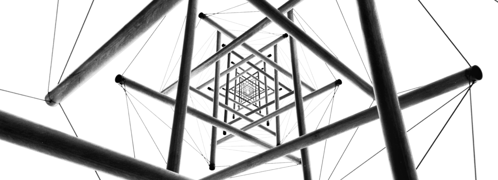

coverage over
a wide range of
news outlets

we keep the media occupied
The company had been involved in the national industry field beside construction activities MASCO had established water purification industry that covered most of areas of the Kingdom. Steel molds die industries, food processing and electrical and telecommunication cables industry were presenting MASCO major industrial activities. Masco industrial products wre produced in according with Saudi standards as well as other industrial standards, health requirements and all related environmental standard requirement. MASCO currently has changed its legal status to joint stock company to be strong and stable in facing the current challenges facing family business in case of succession.
Saudi Contractors Authority Sponsor
MASCO become Sponsor of Saudi Contractors Authority
Mohammed Al Ali Al Swailem Trading and Contracting Company sponsored the Saudi Commission for Contractors in the Kingdom of Saudi Arabia.
The Pearl sponsorship was signed by the Secretary General of the Saudi Contractors Authority, Eng. Thabit bin Mubarak Al Swaid and the CEO of Mohammad Ali Al Swailem. Eng.Abdulrahman Alswailem on 6/6/ 2017 at the Hyatt Regency Hotel in Riyadh
MASCO Platinum Sponsor
MASCO PLATINUM Sponsor
MASCO was a PLATINUM sponsor for the recently concluded IRF
MASCO was a PLATINUM sponsor for the recently concluded International Road Federation - IRF Road Safety Workshop, held in Riyadh from May 30 - June1, 2016 under the Supervision of Ministry of Transport, which was attended by MASCO Chairman Engr. Ali Al-Swailem. This workshop provided an excellent platform to the industry professionals in Roads sector to share valuable information on Global Status of Road Safety, Speed Management, Road Safety Case Studies and Road Safety Audits, among others.MASCO is a long standing member of the IRF
Certificate for Environmental Safety & Health
Certificate for Environmental Safety & Health
MASCO granted with Certificate for Environmental Safety & Health (ES&H)
MASCO was granted with Certificate for Environmental Safety & Health (ES&H) from ROYAL COMMISSION FOR JUBAIL & YANBU for achieving 2,000,000 Man-Hours worked without Lost Work Day Cases (LWDC) During the Project Period from February 2012 to January 2015: Contract No. – 531-C55 “Completion of TS-4 in Mutrafiah” – Jubail.Granted for: "Supporting Zero Accidents Philosophy of the Royal Commission"This is yet another achievement for MASCO and their HSE team
Health & Safety Certificate to MASCO
Health & Safety Recognition Certificate to MASCO
presented with Certificate of Appreciation for HEALTH & SAFETY
MASCO is presented with Certificate of Appreciation for HEALTH & SAFETY on Al RA'IDAH Jeddah Housing Complex Project.The Certificate was presented on 10th March 2016, in recognition of MASCO's contribution towards Project Health and Safety on the achievement of 4 Million Safe Man hours worked on the Al RA'IDAH Jeddah Housing Complex Project.The Certificate was presented to MASCO by KEO International Consultants, on the Project.This is an achievement for MASCO and their HSE team.
Construction of Bridge by MASCO in Jeddah
Construction of Bridge by MASCO in Jeddah
Construction of Bridge by MASCO in Jeddah
MASCO STARTS CONSTRUCTION OF A NEW BRIDGE IN JEDDAH
ES&H CERTIFICATE
ES&H CERTIFICATE
ROYAL COMMISSION FOR JUBAIL & YANBU
MASCO was granted with Certificate for Environmental Safety & Health (ES&H) from ROYAL COMMISSION FOR JUBAIL & YANBU for achieving 4,000,000 Man-Hours worked without Lost Work Day Cases (LWDC) During the Project Period from July 2011 to September 2015: Contract No. – 092-C44 "P&C of TS-3 for Jubail 2"Granted for "Supporting Zero Accidents Philosophy of the Royal Commission".This is an achievement for MASCO and their ES&H team
Health & Safety Recognition
Certificate
Health & Safety Recognition Certificate
MASCO was presented with Certificate of Recognition for Health and Safety
MASCO was presented with Certificate of Recognition for Health and Safety on Al RA'IDAH Jeddah Housing Complex Project.The Certificate was presented on 23rd October 2014, in recognition of MASCO's efforts in Project Health and Safety on achievement of 1 Million Safe Man hours worked on the Al RA'IDAH Jeddah Housing Complex Project.The Certificate was presented to MASCO by KEO International Consultants, on the Project.This is an achievement for MASCO and their HSE team
ARAFAT-2 Substation – Energized
ARAFAT-2 Substation – Energized
MASCO'S AFFILIATE SUCCESSFULLY DEPLOYS ARAFAT-2
Masco's affiliated company in Power sector (Advanced Energy Company) has successfully tested, commissioned and energized, prior to Hajj 1435H, electrical substation 110/13.8kV, to the best satisfaction of the Project Client - National Grid. The Project "ARAFAT-2" is located in the Holy City of Makkah. The scope of work for this turnkey Project comprises of Design, Engineering, Procurement, Construction, installation, Testing & Commissioning of 110/13.8kV Indoor sub-station including Civil, Electrical & Mechanical works.
MASCO Breaking Records
MASCO BREAKING RECORDS
MASCO pours record amount of concrete in Jubail Industrial City
MASCO has poured record amount of concrete (3,300 cubic meters in 20 hours) for a Bridge construction project at intersection 6 with the Jubail Industrial City.The work started at 5am on 25th Jan. 2014 and lasted for 20 hours continuously.7 pumps received ready-mix concrete from more than 200 mixers with a total volume of 3,300 cubic meters, which is the largest recorded in Jubail Industrial City.This Bridge intersection project is one of its kind in Jubail Industrial City including the Intelligent Traffic Control System
gallery